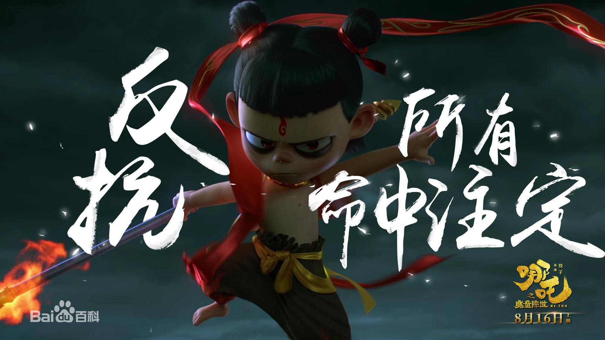

哪吒之魔童降世
- 类型: 剧情 / 喜剧 / 动画 / 奇幻
- 主演: 吕艳婷 / 囧森瑟夫 / 瀚墨 / 陈浩 / 绿绮 / 更多..
- 导演: 饺子
天地灵气孕育出一颗能量巨大的混元珠，元始天尊将混元珠提炼成灵珠和魔丸，灵珠投胎为人，助周伐纣时可堪大用；而魔丸则会诞出魔王，为祸人间。元始天尊启动了天劫咒语，3年后天雷将会降临，摧毁魔丸。太乙受命将灵珠托生于陈塘关李靖家的儿子哪吒身上。然而阴差阳错，灵珠和魔丸竟然被掉包。本应是灵珠英雄的哪吒却成了混世大魔王。调皮捣蛋顽劣不堪的哪吒却徒有一颗做英雄的心。然而面对众人对魔丸的误解和即将来临的天雷的降临，哪吒是否命中注定会立地成魔？他将何去何从？
精选评论
- 牛逼了！没想到国产动画能把故事内核写得这么成熟，远超《大圣归来》。好几场戏被震撼到，必须五星鼓励了。将“水淹陈塘关”的故事元素打碎了重构，人设和剧情完全依照阴阳哲学来做。太极生两仪，混元珠分为魔丸（火）和灵珠（水）。太乙真人与申公豹，哪吒与敖丙，皆是一体双生。命运的偏离带来了秩序的倒错，于是，善与恶的边界变得越加复杂起来，耐人寻味。每个主要角色都带着宿命感，向死而生，阴阳相合打破命运。哪吒形象很颠覆，华语电影里也是难得一见，最重要的反叛精神立住了。导演想击打全龄观众，而那些嬉笑段落在关键时刻也催生出了悲情，让人泪目。高潮部分的场面戏够燃够磅礴，而且情绪饱满。以后再出国产动画，都将和它比较
- 牛逼！牛逼！牛逼！4年前翻着白眼看完了《大圣归来》，4年后热泪盈眶地看完这部《哪吒之魔童降世》。没想到2019不仅仅是中国科幻大片元年，本片更是和《白蛇：缘起》一块儿创造了国产动漫作品前所未有的高潮。扎实的故事，生动的角色，饱满的情绪，炸裂的场面，这一切都构成了110分钟云霄飞车式的、畅快淋漓的观影体验，表面上是哪吒的传奇，骨子里面是《绝代双骄》+《悟空传》，毁天灭地的逆天气势更是燃破天际，好一曲震撼人心的“冰与火之歌”！都给老子去看！。
- 休说苍天不由人，我命由我不由天。新的故事，改编的很不错啊，就是有点短。友情提醒：观影记得带纸巾
- 客观上的确是目前国产三维动画中的最佳。和年初的《白蛇》一道，富足想象力之下的经典魔改，在人物、情节和视听呈现上都冲着一股劲。不夸张地说，这部作品在今年全球范围动画中比，都可以排到最前列。但还是有些遗憾，双生的概念没有做得更加复杂深刻、部分低俗笑料虽有趣但跳线。可能是我期待太高了
- 李靖到底是为了什么做 揭穿敖丙身份 这样损人不利己的事？
预告片